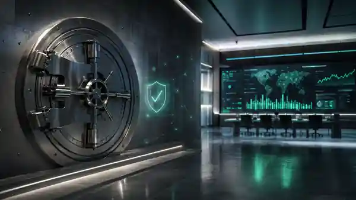

Confianza por diseño
Respaldo, auditoría y seguridad no pueden ser una nota al pie.
El fundamento del sistema es institucional antes que tecnológico.
Project Balboa propone una representación digital soberana del balboa, respaldada 100% por activos en dólares estadounidenses y diseñada como infraestructura pública de pagos, liquidación y confianza.
Panamá ya tiene la disciplina monetaria. Project Balboa no pretende reinventarla: propone modernizar los rails sobre los cuales circula el dinero.
Cada B/.D existiría contra el equivalente exacto en activos USD.
No hay una nueva máquina de imprimir dinero.
Pagos y liquidación en tiempo real, todos los días.
Bancos, fintechs, comercios y Estado sobre estándares interoperables.

El fundamento del sistema es institucional antes que tecnológico.
Debe sentirse como dinero, no como crypto.

La próxima capa puede ser monetaria y digital.
La regla central es brutalmente simple: no puede existir un B/.D si el dólar equivalente no ha entrado primero a la reserva.
El usuario no debería necesitar entender blockchain, tokenización o settlement. Debería sentir que está usando balboas: instantáneos, disponibles y fáciles de mover.
Si parte de la circulación migra a B/.D, los activos que respaldan esa emisión podrían mantenerse en instrumentos USD líquidos y prudentes. El simulador es exclusivamente ilustrativo.
No es una proyección financiera. No descuenta costos operativos, liquidez, seguridad ni cambios en tasas.
Límites prudenciales, transición gradual y herramientas de liquidez.
Arquitectura distribuida, redundancia, HSM y operación resiliente.
Privacidad protegida por ley y separación entre identidad y emisión.
Prohibición de emisión sin respaldo y de financiamiento directo al Gobierno.
Cumplimiento proporcional y estándares internacionales desde el diseño.
La experiencia tiene que ser superior a los pagos existentes desde el primer día.
Ley marco, gobernanza, arquitectura y sandbox.
Wallet, pilotos, bancos participantes y comercios.
Estado, interoperabilidad, offline y adopción amplia.
Capital markets, trade finance y activos tokenizados.
Balboa digital-first y retiro progresivo de nueva acuñación física.
Estabilidad del dólar. Infraestructura digital. Soberanía panameña.
Si estás explorando dinero digital, infraestructura pública, innovación financiera o posibles colaboraciones, nos interesa conversar.